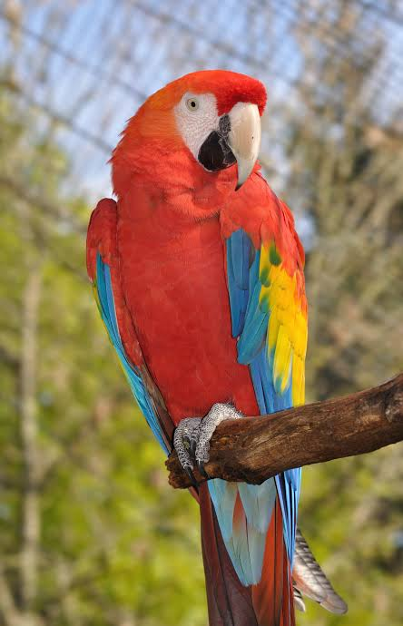

El guacamayo (o guacamaya) es un ave exótica de la familia de los loros que destaca por ser uno de los miembros más grandes y coloridos de su grupo, con longitudes que pueden alcanzar los 90 centímetros y un peso de hasta 1.5 kg según la especie. Su rasgo más llamativo es su plumaje brillante y multicolor, con combinaciones intensas de rojo, azul, amarillo y verde, además de poseer una zona de piel desnuda y clara alrededor de los ojos. Cuentan con un pico curvo extremadamente fuerte y robusto que utilizan como una tercera pata para trepar y con el que pueden romper fácilmente cáscaras duras de frutos secos y semillas, las cuales componen la base de su dieta herbívora junto con frutas y flores. Son aves sumamente inteligentes, sociables y ruidosas que emiten fuertes graznidos para comunicarse a largas distancias, y se caracterizan por ser monógamas, formando parejas para toda la vida con las que vuelan y anidan en los huecos de árboles altos. Su hábitat natural abarca las selvas tropicales densas, bosques húmedos y sabanas desde el sur de México hasta el norte de Argentina.